الصور في هذا الدليل من التطبيق باللغة العربية. لتغيير لغة التطبيق: الإعدادات ← اللغة ← العربية.
١. كيف يعمل النظام
يتكون النظام من جزأين:
جهاز البصمة على الحائط: يضع الموظف إصبعه لتسجيل الدخول أو الخروج. يعرض الجهاز اسم الموظف والوقت، ويحفظ كل بصمة في ذاكرته (حوالي 40,000 بصمة)، ويستمر في العمل حتى والكمبيوتر مغلق.
تطبيق الإدارة على كمبيوتر ويندوز: ينسخ البصمات من الجهاز (كل 20 ثانية طالما التطبيق مفتوح)، ومنه تُدار بيانات الموظفين والورديات وسجل الدوام الشهري والرواتب.
الكمبيوتر هو السجل الدائم. بعد حفظ البصمة على الكمبيوتر يمكن للجهاز إعادة استخدام مكانها. أسماء الموظفين والورديات والأجور والتقارير موجودة على الكمبيوتر فقط.
لا داعي لترك التطبيق مفتوحاً طوال اليوم. يحتفظ الجهاز بالبصمات حتى يتصل التطبيق، ثم يكمل التطبيق النسخ تلقائياً.
٢. التثبيت والتشغيل لأول مرة
التثبيت
انسخ مجلد Release بالكامل إلى الكمبيوتر (مثلاً C:\Attendance) وشغّل attendance_admin.exe. أنشئ له اختصاراً على سطح المكتب. انسخ المجلد كاملاً دائماً وليس ملف exe وحده.
الاتصال بالجهاز
عند التشغيل لأول مرة يبحث التطبيق عن الجهاز في الشبكة تلقائياً. عند العثور عليه يطلب رمز الجهاز (token)، وهو رمز من 32 حرفاً يحمي الجهاز، ويظهر في سجل تشغيل الجهاز في السطر الذي يبدأ بـ api: listening.
إذا لم يجد البحث الجهاز، اضغط إدخال العنوان يدوياً واكتب عنوان IP الظاهر أعلى شاشة الجهاز، ثم الرمز، ثم اتصال.
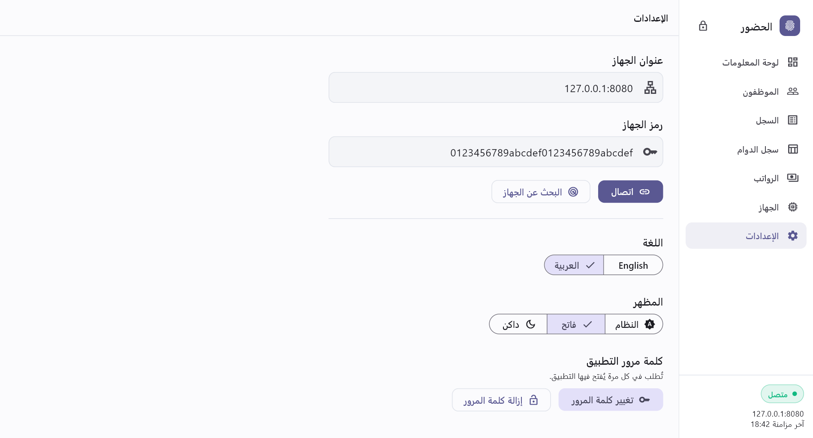
الإعدادات: عنوان الجهاز ورمزه، وكلمة مرور التطبيق في الأسفل.
يُحفظ العنوان والرمز، ومن بعدها يفتح التطبيق مباشرة على النافذة الرئيسية. وإذا حصل الجهاز لاحقاً على عنوان مختلف من الراوتر يجده التطبيق تلقائياً.
٣. كلمة مرور التطبيق
لمنع الآخرين من فتح التطبيق على الكمبيوتر، اضبط كلمة مرور من الإعدادات ← كلمة مرور التطبيق ← تعيين كلمة المرور (4 أحرف على الأقل، تُكتب مرتين). بعدها يطلبها التطبيق في كل مرة يُفتح.
الإعدادات، وقسم كلمة مرور التطبيق في الأسفل.
القفل الآن: أيقونة القفل بجوار اسم التطبيق أعلى القائمة الجانبية تقفل التطبيق فوراً، مثلاً عند ترك المكتب.
التغيير أو الإزالة: الإعدادات ← تغيير كلمة المرور أو إزالة كلمة المرور، وكلاهما يطلب كلمة المرور الحالية أولاً.
أثناء القفل يستمر نسخ البصمات من الجهاز في الخلفية.
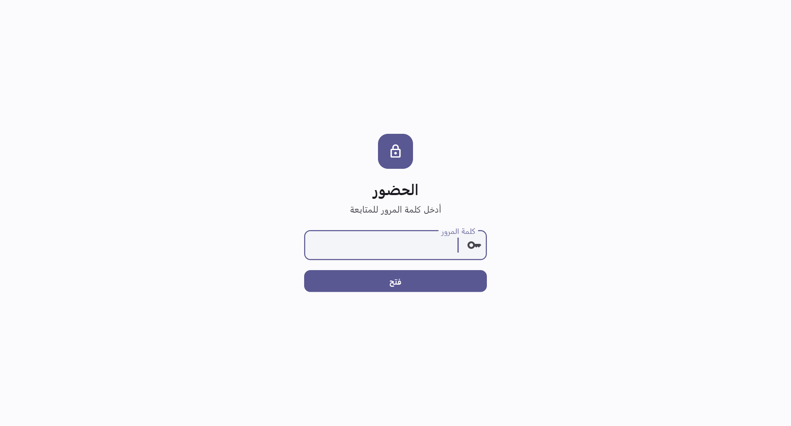
شاشة القفل.
نسيان كلمة المرور: أغلق التطبيق، وافتح الملف %APPDATA%\com.store\attendance_admin\shared_preferences.json في المفكرة، واحذف السطر الذي يحتوي على flutter.app_password فقط، ثم احفظ وشغّل التطبيق. لا تحذف أي شيء آخر من الملف، ففيه عنوان الجهاز ورمزه.
٤. النافذة الرئيسية
القائمة الجانبية تفتح كل صفحة: لوحة المعلومات، الموظفون، السجل، سجل الدوام، الرواتب، الجهاز، الإعدادات. ويظهر في أسفلها حالة الاتصال:
الحالة
المعنى
متصل
كل شيء يعمل. «آخر مزامنة» هو آخر وقت نُسخت فيه البصمات.
جارٍ المزامنة
جارٍ نسخ البصمات الآن.
جارٍ البحث عن الجهاز
انتقل الجهاز إلى عنوان جديد والتطبيق يبحث عنه.
غير متصل
لا يمكن الوصول للجهاز (مغلق، كابل، شبكة). استخدم زر إعادة المحاولة. البصمات محفوظة على الجهاز في هذه الأثناء.
رمز غير صحيح
رفض الجهاز الرمز. افتح الإعدادات وأدخله من جديد.
٥. لوحة المعلومات
الصفحة الأولى تعرض الوضع مباشرة: عدد الموجودين في العمل الآن، وعدد البصمات المخزنة على الجهاز، والمنتظرة للنسخ، والذاكرة الحرة في الجهاز، وآخر البصمات بالأسماء والأوقات.
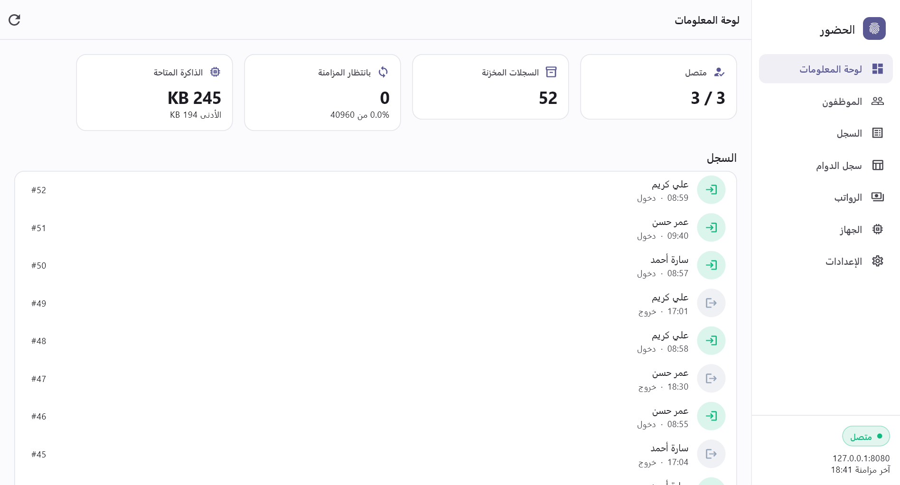
لوحة المعلومات: الموظفون الثلاثة في العمل، وكل البصمات منسوخة إلى الكمبيوتر.
٦. الموظفون والبصمات
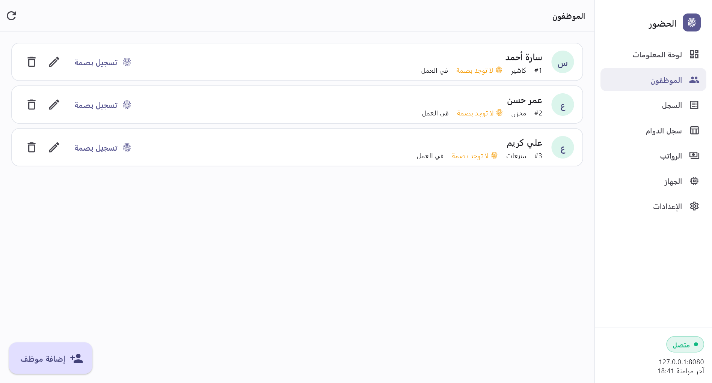
قائمة الموظفين.
إضافة موظف
اضغط إضافة موظف (أسفل الشاشة).
يُملأ رقم الموظف تلقائياً (من 1 إلى 65535) ولا يمكن تغييره لاحقاً.
اكتب الاسم (عربي أو إنجليزي) والمسمى الوظيفي إن أردت، ثم اضغط إضافة.
يظهر الاسم على شاشة الجهاز عند البصمة. يجب أن يكون الجهاز متصلاً لإضافة موظف.
تسجيل البصمات
اضغط تسجيل بصمة في صف الموظف.
اتبع الخطوات على الشاشة وعلى الجهاز: ضع إصبعك على الجهاز ← ارفع إصبعك ← ضع نفس الإصبع مرة أخرى.
«تم التسجيل بنجاح» يعني أن البصمة حُفظت. إذا فشل التسجيل أعد المحاولة ببساطة.
سجّل إصبعين أو ثلاثة لكل موظف (مثلاً السبابة في اليدين). الأصابع المبللة أو الجافة أو المجروحة قد لا تُقرأ أحياناً، والإصبع الثاني يمنع ضياع البصمة. يتسع الحساس لحوالي 240 بصمة إجمالاً.
التعديل والحذف والاستعادة
تعديل (القلم): تغيير الاسم أو المسمى، ويُحدَّث عرض الجهاز.
حذف (سلة المهملات): يحذف الموظف وبصماته من الجهاز، لكن سجل حضوره يبقى في كل التقارير السابقة. ينتقل إلى موظفون سابقون، ومنها يعيده زر استعادة إلى الجهاز (ثم سجّل بصماته من جديد).
عبارة غير موجود على الجهاز مع زر إرسال إلى الجهاز تعني أن الكمبيوتر يعرف الموظف والجهاز لا يعرفه (مثلاً بعد مسح الجهاز). اضغط الزر ثم سجّل بصماته.
ازدياد عدد المحاولات الفاشلة يعني أن الإصبع أصبح صعب القراءة: سجّل إصبعاً آخر.
٧. السجل (البصمات)
كل دخول وخروج، الأحدث أولاً، مجمعة حسب اليوم. يمكن التصفية حسب الموظف أو التاريخ من الأعلى.
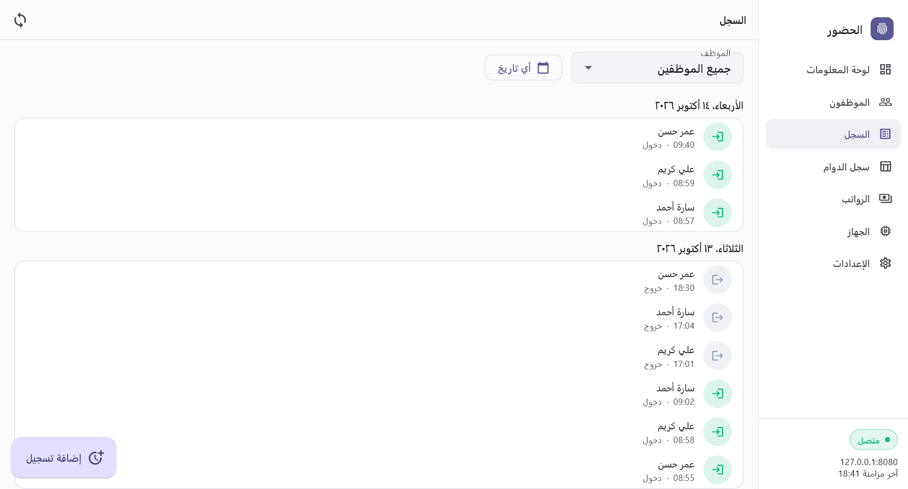
السجل مجمّعاً حسب اليوم.
إضافة بصمة يدوياً
عندما لا يُقرأ الإصبع، يمكن للمدير إدخال البصمة: إضافة تسجيل ← اختر الموظف، دخول أو خروج، التاريخ والوقت، والسبب (إلزامي). البصمات اليدوية تُميَّز في كل التقارير وتُسجَّل في سجل التعديلات.
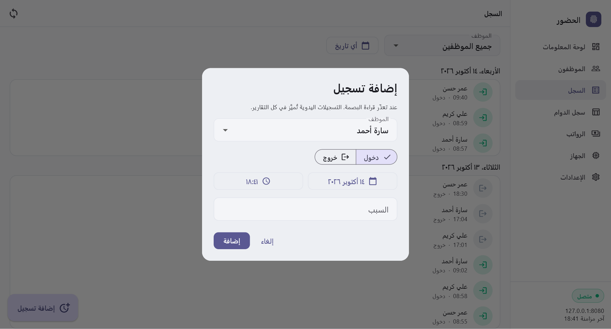
إضافة بصمة يدوية. السبب إلزامي.
تصحيح وقت
اضغط على البصمة واختر تصحيح الوقت، وأدخل الوقت الصحيح والسبب. الوقت الأصلي لا يُحذف أبداً: التصحيح هو المستخدم في التقارير، وإزالة التصحيح تعيد الأصل. البصمات اليدوية المدخلة خطأً يمكن حذفها، أما بصمات الجهاز فلا تُحذف (فهي دليل) لكن يمكن تصحيحها.
«الوقت غير مؤكد» تعني أن الجهاز فقد الكهرباء ولم يكن قد تأكد من ساعته وقت البصمة. راجع هذه الأوقات وصححها إن كانت خاطئة. يضبط التطبيق ساعة الجهاز تلقائياً عند الاتصال.
٨. الورديات
الورديات تحدد ما يُعتبر تأخيراً وغياباً وعملاً إضافياً ويوم راحة. تُفتح من سجل الدوام ← أيقونة الضبط (الورديات).
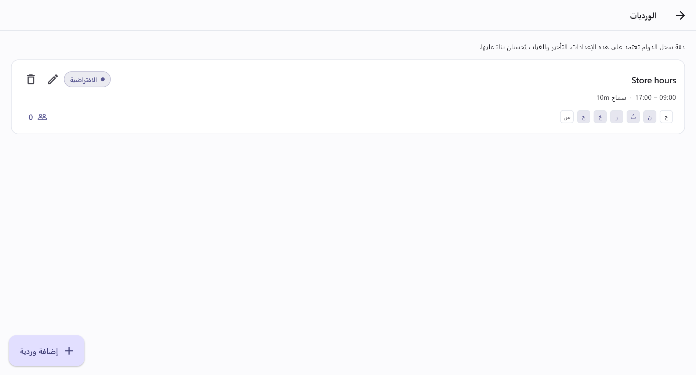
الوردية الافتراضية «Store hours».
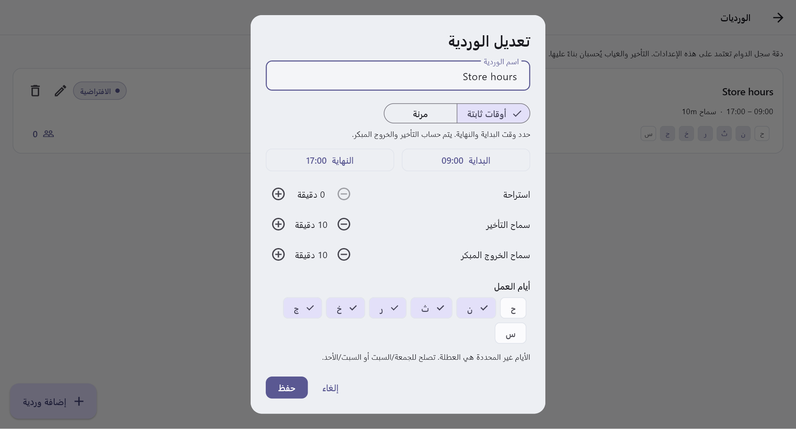
تعديل وردية.
ساعات ثابتة: وقت بداية ونهاية (مثلاً 09:00–17:00)، ويُحسب التأخير والخروج المبكر. إذا كانت النهاية قبل البداية فهي وردية ليلية تنتهي في اليوم التالي.
مرنة: تُحسب ساعات اليوم فقط ولا يوجد تأخير.
الاستراحة: دقائق غير مدفوعة تُطرح من طول الوردية.
سماح التأخير / سماح الخروج المبكر: الوصول خلال فترة السماح لا يُعتبر تأخيراً. بعدها يُحسب التأخير كاملاً (الوصول 09:25 مع سماح 10 دقائق = تأخير 25 دقيقة).
أيام العمل: الأيام غير المحددة هي العطلة (تصلح للجمعة/السبت أو السبت/الأحد).
افتراضية: الوردية المستخدمة لكل من ليست له وردية خاصة. وردية واحدة فقط تكون الافتراضية.
تعيين إلى (أيقونة الأشخاص): اختر من يعمل هذه الوردية. التغيير يسري من اليوم فصاعداً ولا يُعاد حساب الأشهر السابقة.
٩. سجل الدوام
حضور الشهر محسوباً على الكمبيوتر من البصمات المحفوظة. غيّر الشهر بالأسهم أعلى اليمين.
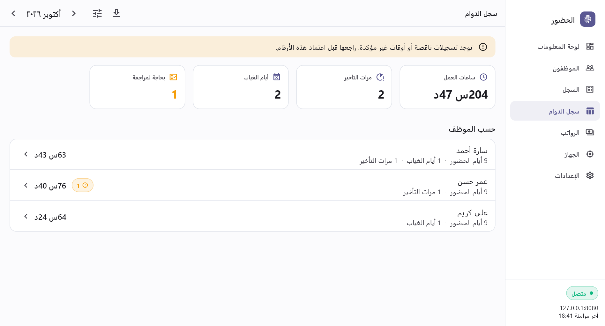
ملخص سجل الدوام لشهر أكتوبر.
اضغط على الموظف لرؤية كل يوم:
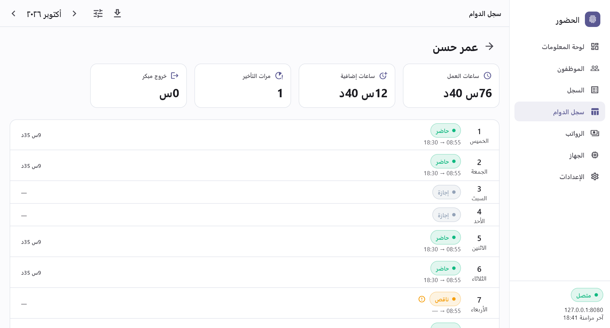
أيام موظف واحد. يوم 7 «ناقص»: نسي تسجيل الخروج.
الحالة
المعنى
حاضر
عمل في يوم مجدول.
غائب
مجدول ولا توجد أي بصمة.
ناقص
البصمات لا تكتمل، غالباً خروج ناقص. بحاجة لمراجعة.
إجازة
غير مجدول. أي عمل فيه يُحسب عملاً في يوم راحة.
قادم
يوم مجدول لم يأتِ بعد.
في العمل
اليوم، سجّل الدخول ولم يسجل الخروج بعد.
التنبيه البرتقالي وعدد «بحاجة لمراجعة» يشيران إلى أيام بها بصمات ناقصة أو أوقات غير مؤكدة. أصلحها من صفحة السجل (أضف البصمة الناقصة أو صحح الوقت) قبل اعتماد الأرقام في الرواتب.
تصدير إلى Excel (أيقونة التنزيل) يحفظ الملف timesheet-YYYY-MM.xlsx في مجلد المستندات: ورقة ملخص وورقة تفاصيل يومية. عندما يكون التطبيق بالعربية يكون الملف بالعربية ومن اليمين لليسار. الملف الذي يحمل نفس الاسم يُستبدل.
١٠. الرواتب
رواتب الشهر محسوبة بناءً على سجل الدوام.
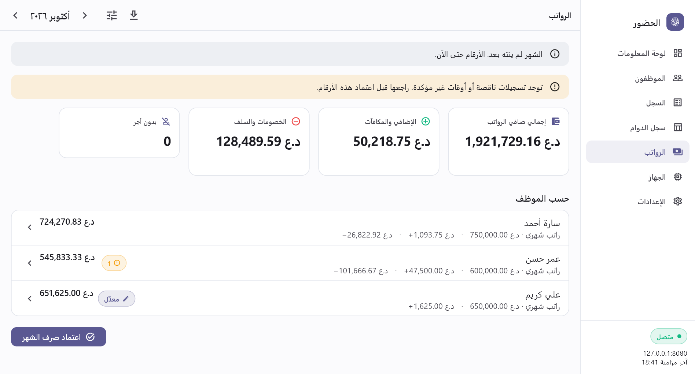
رواتب أكتوبر: الإجماليات وصف لكل موظف.
كيف يُحسب الراتب
أجر اليوم = الراتب الشهري ÷ 30 (في كل شهر). أجر الساعة = أجر اليوم ÷ ساعات وردية الموظف المعتادة.
العمل الإضافي في يوم عمل يُدفع بـ ×1.5 من أجر الساعة، وأي عمل في يوم راحة بـ ×2.
التأخير والخروج المبكر يُخصمان بالدقيقة بـ ×1 من أجر الساعة (مع بقاء فترة السماح).
كل غياب يُخصم أجر يوم (ولا يزيد الخصم عن الراتب). الشهر المنتهي بدون أي حضور لا يُدفع فيه شيء.
كل ذلك قابل للتغيير من قواعد الرواتب (أيقونة الضبط): المعاملات (صفر يوقف الخصم)، وخصم الغياب أم لا، وتجاهل الإضافي القصير (مثلاً أقل من 15 دقيقة يومياً)، والعملة (د.ع في هذه الأمثلة).
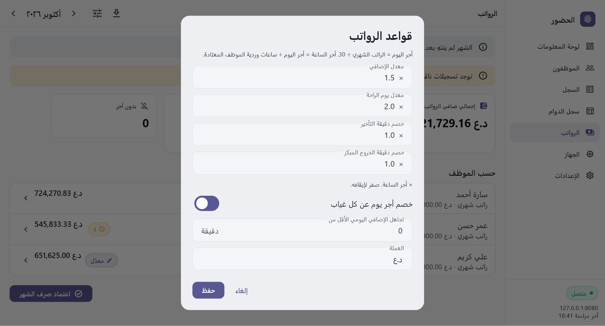
قواعد الرواتب.
تحديد الأجر
اضغط على الموظف ثم تحديد الأجر. اختر راتب شهري أو يومي أو بالساعة وأدخل المبلغ. الأجر يُطبق من الشهر المعروض فصاعداً، والأشهر السابقة تحتفظ بأجرها، فالزيادة لا تغيّر الأشهر الماضية أبداً.
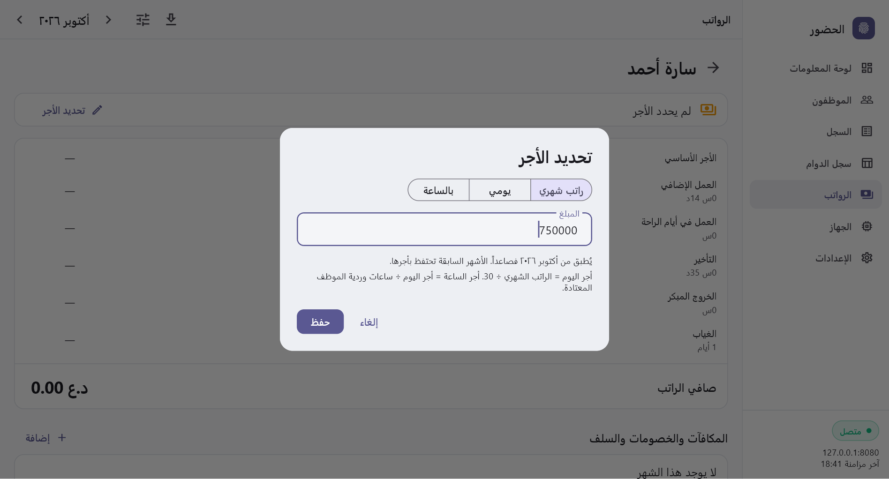
تحديد راتب شهري قدره 750,000 دينار.
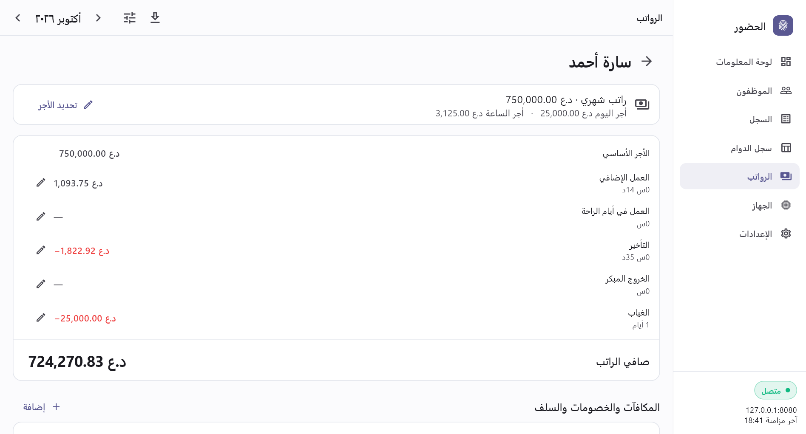
كشف الراتب بعد الحفظ: خصم تأخير وغياب.
يومي: يُدفع عن كل يوم مجدول حضره، وأيام الغياب غير مدفوعة.
بالساعة: يُدفع عن الدقائق التي عملها، ولا يُخصم التأخير والغياب مرة أخرى (فهو وقت غير مدفوع أصلاً).
تعديل رقم: اضغط القلم بجوار الإضافي أو العمل في أيام الراحة أو التأخير أو الخروج المبكر أو الغياب لاستبدال رقم الجهاز (مثلاً اجعل أيام الغياب 0 لاعتبار إجازة مرضية). يُميَّز السطر بـ معدّل ويبقى رقم الجهاز الأصلي ظاهراً. استخدام رقم الجهاز يلغي التعديل.
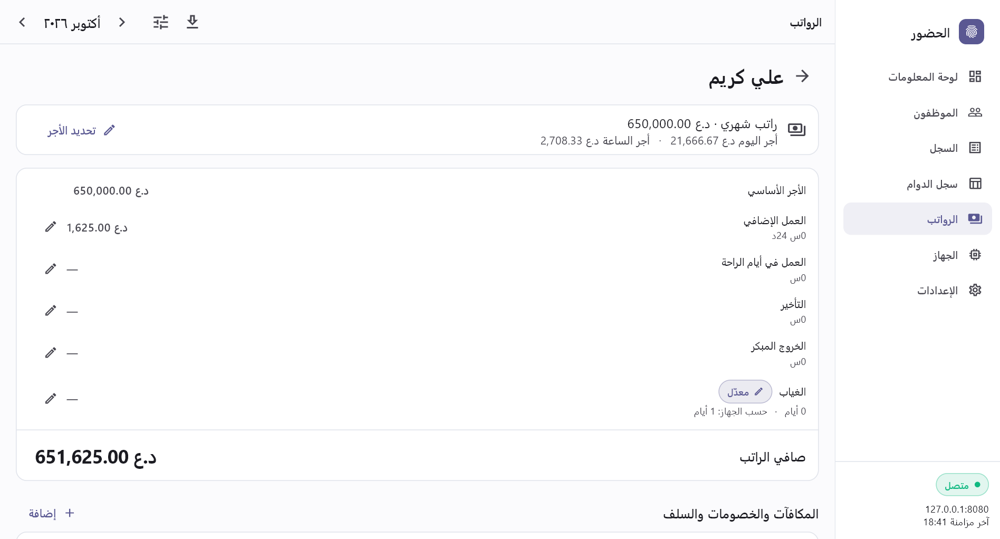
رقم معدّل: اعتُبر غياب علي بعذر (0 أيام مدفوعة بدلاً من يوم واحد حسب الجهاز).
المكافآت والخصومات والسلف: اضغط إضافة أسفل الكشف، واختر النوع والمبلغ والملاحظة (إلزامية). احذف أي منها بعلامة ✕.
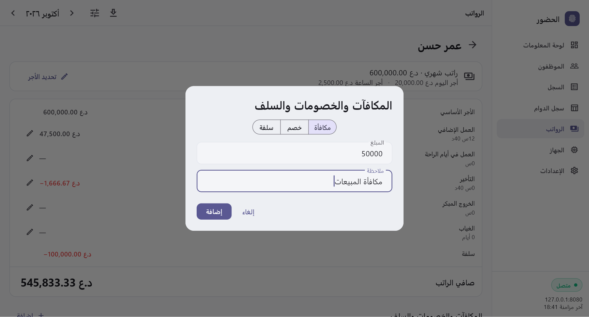
إضافة مكافأة.
صرف الشهر
عند صرف الرواتب اضغط اعتماد صرف الشهر. تُثبَّت أرقام الشهر: التصحيحات اللاحقة وتغيير الأجور أو القواعد لا تغيّر ما صُرف. ينبهك التطبيق إذا لم ينتهِ الشهر، أو إذا كانت هناك أيام بحاجة لمراجعة، أو موظف بدون أجر. زر إعادة فتح يلغي التثبيت (ويُعاد الحساب من البيانات الحالية).
أيقونة التنزيل تصدّر الملف payroll-YYYY-MM.xlsx إلى المستندات: كل بنود الكشف لكل موظف مع الإجماليات، وورقة للمكافآت والخصومات والسلف.
الموظفون الجدد: لا يعرف التطبيق تاريخ التعيين، فتُحسب الأيام قبل التحاق الموظف غياباً. في شهره الأول قلّل أيام الغياب بالقلم.
١١. إعدادات الجهاز
كل ما هنا محفوظ على الجهاز. غيّر ما تحتاجه ثم اضغط تطبيق.
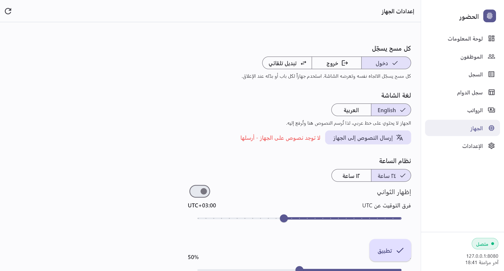
إعدادات الجهاز.
كل مسح يسجّل:دخول أو خروج يسجل نفس الاتجاه للجميع وتعرضه الشاشة (بدّله عند الإغلاق أو بزر اللمس على الجهاز). تبديل تلقائي يبدّل كل موظف بين الدخول والخروج.
لغة العرض: الإنجليزية أو العربية على الجهاز. بعد تغييرها اضغط إرسال النصوص إلى الجهاز، لأن الجهاز لا يحتوي على خط عربي فيرسم التطبيق النصوص ويرسلها.
نظام الساعة (24 أو 12 ساعة)، وإظهار الثواني، وفرق التوقيت عن UTC (يضبطه التطبيق تلقائياً حسب الكمبيوتر).
السطوع، وتعتيم الشاشة بعد، وإطفاء الشاشة بعد. أبقِ التعتيم مفعلاً، فالشاشة المضيئة دائماً تحترق مع الوقت.
الصافرة، وزر اللمس موصول، وسلك تنبيه المستشعر موصول (أوقفها فقط إذا لم تكن هذه الأجزاء موصلة).
تجاهل التكرار خلال: المسح الثاني لنفس الشخص خلال هذه المدة يُتجاهل (الافتراضي دقيقة).
مسح بيانات الجهاز: مسح السجل أو البصمات أو الإعدادات أو كل شيء، ويجب كتابة CLEAR. تُنسخ البصمات إلى الكمبيوتر أولاً، فمسح السجل لا يضيّع ما تمت مزامنته.
١٢. الواي فاي الاحتياطي
الجهاز ← واي فاي احتياطي. يبقى الإيثرنت هو الاتصال الأساسي. إذا لم يعمل الكابل لمدة 20 ثانية ينضم الجهاز إلى شبكة الواي فاي هذه، ويعود إلى الكابل بعد أن يعمل مجدداً لمدة دقيقة.
اضبطه بينما يستطيع التطبيق الوصول إلى الجهاز (عادةً عبر الكابل).
اضغط بحث: يعرض الجهاز الشبكات التي يلتقطها، الأقوى أولاً. اختر شبكتك.
اكتب كلمة المرور (فارغة فقط للشبكة المفتوحة، وإلا 8 أحرف على الأقل) واضغط حفظ.
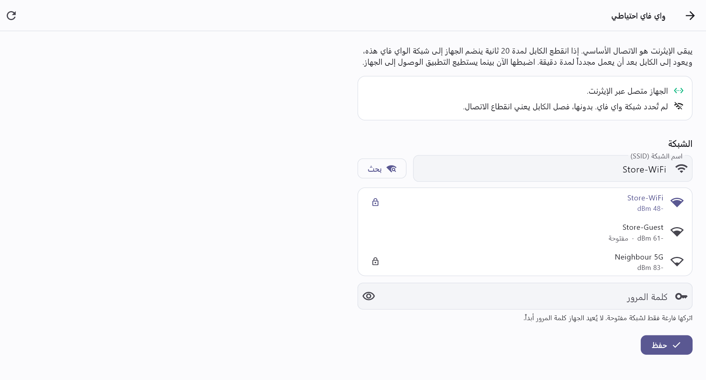
اختيار الشبكة من نتائج بحث الجهاز.
تعرض الصفحة هل الجهاز على الإيثرنت أم الواي فاي وقوة الإشارة. نسيان الشبكة يحذفها. عند التحويل يتغير عنوان الجهاز، ويجده التطبيق تلقائياً إذا كان الكمبيوتر على نفس الشبكة.
١٣. تنبيهات تيليجرام
الجهاز ← تنبيهات تيليجرام. جهاز البصمة هو من يرسل التنبيهات، فتصل حتى والكمبيوتر مغلق.
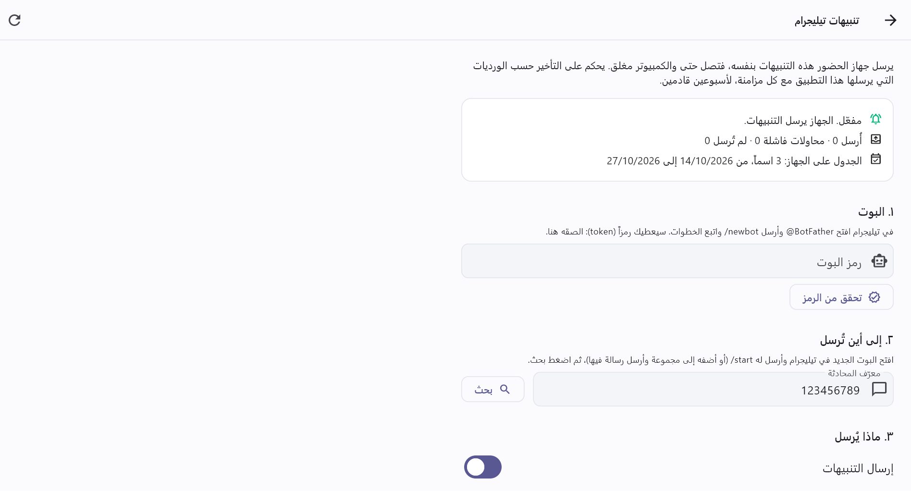
إعداد البوت والمحادثة.
في تيليجرام افتح @BotFather وأرسل /newbot واتبع الخطوات. انسخ الرمز الذي يعطيك إياه، والصقه في رمز البوت واضغط تحقق من الرمز.
افتح البوت الجديد في تيليجرام وأرسل له /start (أو أضفه إلى مجموعة واكتب رسالة فيها). اضغط بحث واختر المحادثة.
اختر ما يُرسل، وفعّل إرسال التنبيهات، واضغط حفظ، ثم إرسال رسالة تجريبية.
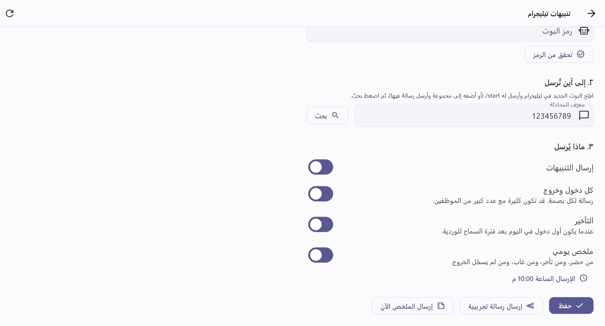
ما الذي يُرسل.
كل دخول وخروج: 🟢 سارة — دخول 08:57، 🔴 سارة — خروج 17:05.
التأخير: 🟠 عمر — دخول 09:40 · متأخر 40 دقيقة، عندما يكون أول دخول في اليوم بعد فترة السماح.
ملخص يومي في الوقت الذي تختاره: الحاضرون، والمتأخرون، والغائبون، ومن لم يسجل الخروج، ومن حضر في يوم راحة.
الرسائل بلغة عرض الجهاز. يرسل التطبيق إلى الجهاز الأسماء وورديات الأيام الأربعة عشر القادمة مع كل مزامنة، فتستمر تنبيهات التأخير لأسبوعين والكمبيوتر مغلق. تعرض الصفحة عدد الرسائل المرسلة وآخر مشكلة إن وجدت.
١٤. الإعدادات
عنوان الجهاز / رمز الجهاز / اتصال / البحث عن الجهاز: لتغيير الجهاز أو إعادة العثور عليه.
اللغة: English أو العربية للتطبيق كله (العربية من اليمين لليسار).
المظهر: النظام أو فاتح أو داكن.
كلمة مرور التطبيق: انظر القسم ٣.
١٥. الروتين اليومي والشهري
كل يوم
افتح التطبيق مرة، وتأكد أن الركن السفلي يعرض متصل.
إذا لم يستطع أحد البصمة، أضف بصمته في صفحة السجل مع السبب.
في نهاية الشهر
سجل الدوام: عالج كل يوم «بحاجة لمراجعة» (أضف الخروج الناقص، وصحح الأوقات غير المؤكدة).
الرواتب: تأكد أن لكل موظف أجراً، واعتبر الغياب بعذر (إجازة مرضية)، وأضف المكافآت والخصومات والسلف.
صدّر سجل الدوام والرواتب إلى إكسل إذا كنت تحتفظ بنسخ ورقية أو محاسبية.
اصرف الرواتب، ثم اضغط اعتماد صرف الشهر.
١٦. حل المشكلات
المشكلة
الحل
«غير متصل»
تأكد أن الجهاز يعمل وضوء الشبكة فيه مضاء، وانظر العنوان على شاشته. اضغط إعادة المحاولة. البصمات محفوظة على الجهاز.
«رمز غير صحيح»
الإعدادات ← أدخل الرمز من سجل تشغيل الجهاز ← اتصال.
لا يُعثر على الجهاز تلقائياً
الإعدادات ← اكتب العنوان الظاهر على شاشة الجهاز ← اتصال.
«غير معروف» على الجهاز
جرّب إصبعاً آخر مسجلاً، وسجّل أصابع إضافية للموظف. أضف البصمة يدوياً عند الحاجة.
يوم يظهر «ناقص»
هناك خروج ناقص: أضفه من صفحة السجل.
«الوقت غير مؤكد»
انقطعت الكهرباء عن الجهاز. صحح الوقت من صفحة السجل إن كان خاطئاً.
النص العربي يظهر مربعات على الجهاز
الجهاز ← إرسال النصوص إلى الجهاز.
لا تصل رسائل تيليجرام
الجهاز ← تنبيهات تيليجرام: تأكد من تفعيل «إرسال التنبيهات»، ثم أرسل رسالة تجريبية واقرأ «آخر مشكلة».
الرواتب تبدو خاطئة
راجع قواعد الرواتب وأجر كل موظف، وراجع الورديات (فهي تحدد التأخير والإضافي).